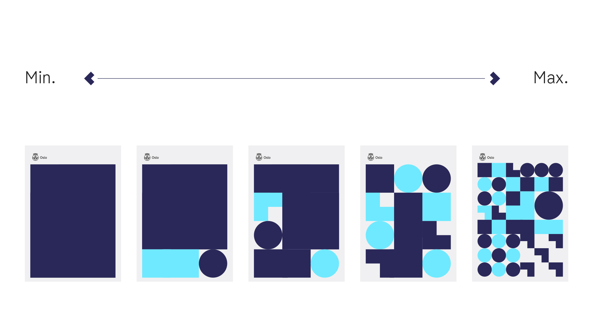

<body onload="start()">
  Создайте простой слайдер: <br />

  

  <script>
    function start() {
      timer = setInterval(slideShow, 500);
      slideShow();
    }

    function slideShow() {
      var image = document.getElementById("image");

      if (window.number == undefined || window.number == 2) {
        // картинки от 1.jpg до x.jpg (2 в данном случае)
        window.number = 1;
      } else window.number = window.number + 1;

      image.src = window.number + ".jpg";
    }
  </script>
</body>
